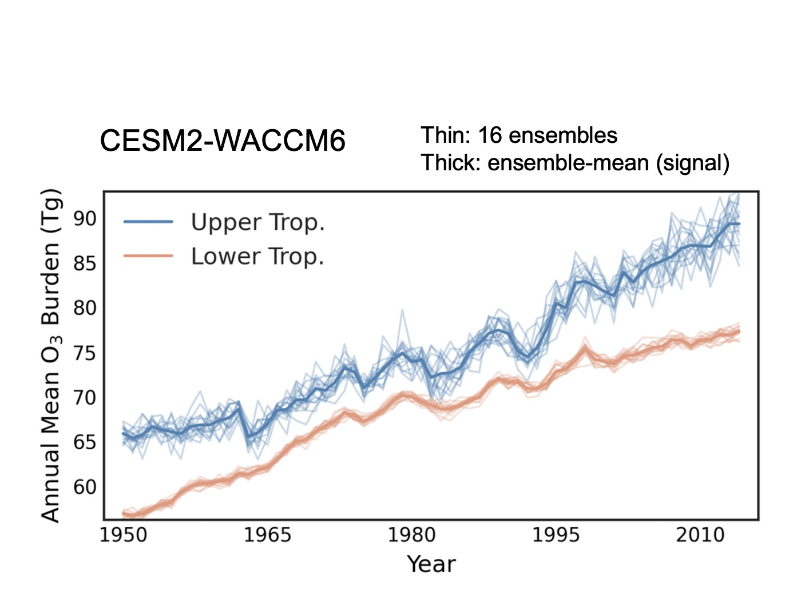

Detecting and attributing tropospheric ozone trends
Upper tropospheric ozone has continued to increase in recent decades, even as air-quality controls have reduced warm-season surface ozone in some regions. These contrasting trends suggest that ozone’s importance as a greenhouse gas is growing despite regional improvements in air quality (Fiore et al., 2022). To understand these changes, we combine CESM2-WACCM6 chemistry–climate model ensembles with satellite, aircraft, and ozonesonde observations. Simulations with identical external forcings but different initial conditions allow us to distinguish the forced response from internal climate variability. Using a formal climate fingerprinting method (Santer et al., 2018), we detected a human influence on upper tropospheric ozone in the OMI/MLS satellite record (Yu et al., 2024).

To identify the drivers behind these changes, we use sensitivity experiments that hold individual emission sources or other forcings constant. We found that surface anthropogenic nitrogen oxide (NOx) emissions dominate the simulated 1995–2014 increase in tropospheric ozone, with a substantial contribution from South and East Asia (Yu et al., 2026). We further extend this analysis to differences between the lower and upper troposphere across seasons, examining the roles of surface anthropogenic emissions, aircraft, biomass burning, and ozone-depleting substances, and assessing where their influences can be distinguished from internal variability (Yu et al., in preparation).